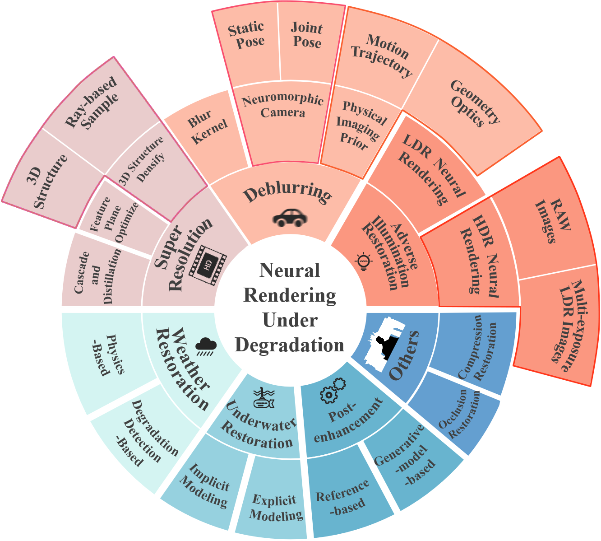

Methodological Analysis
This survey reviews neural rendering under degraded inputs and classifies existing studies into 7 representative tasks: Deblurring, Adverse Illumination Restoration, Super Resolution, Weather Restoration, Underwater Restoration, Post-enhancement and Others. We summarize the representative work and progress in each task.

We also provide an in-depth analysis of seven degradation tasks and their technical solutions
